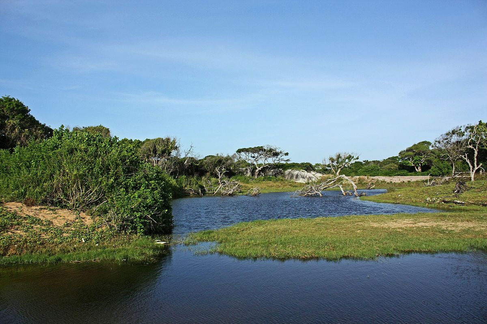
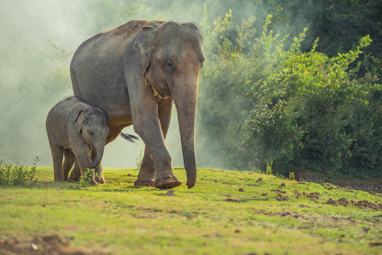

Explore hidden gems of Sri Lankan wildlife

Sinharaja Forest Reserve
Sinharaja, a UNESCO World Heritage Site, is Sri Lanka's crown jewel of biodiversity. This ancient
rainforest, protected for centuries, holds the secrets of over 150 endemic species, meaning you can't
find them anywhere else on Earth! Imagine exploring a place where playful monkeys swing through
the trees, vibrant butterflies flit through the air, and elusive leopards roam the shadows.

Horton Plains National Park
Horton Plains National Park, nestled in the central highlands of Sri Lanka, stands as a captivating testament to the island's natural beauty and biodiversity. Spread across an expanse of approximately 3,169 hectares, this unique park is characterized by rolling hills, lush grasslands, and mist-covered landscapes. One of the park's iconic features is World's End, a sheer precipice that offers breathtaking panoramic views of the surrounding valleys and tea plantations, particularly during the early morning hours when the mist begins to lift.

Kumana National Park
Kumana National Park, situated on the southeastern coast of Sri Lanka, is a mesmerizing wildlife sanctuary renowned for its diverse ecosystems and abundant birdlife. Covering an expansive area of approximately 35,664 hectares, the park is a vital component of the Yala-Kumana-Magampura Sanctuary complex, forming a haven for a wide array of flora and fauna.
Locations
Sinharaja Reserve
Kumana
Horton Plains National Park
Animal Spotlight
| Animal | Interesting Fact | Image |
|---|---|---|
| Sri Lankan Leopard | Sri Lankan leopards are stunning cats! They're masters of disguise with their spotted coats, perfect for blending in with the jungle. These agile climbers can scale trees and rocks with ease, hunting for small animals like deer and monkeys. Despite their fierce reputation, leopards are actually quite shy and prefer to avoid humans. |  |
| Asian Elephant | These gentle giants roam Sri Lanka's forests and grasslands, using their amazing trunks like multi-tools! With their sensitive tips, they can sniff out yummy fruit from miles away and even pick up a single blade of grass! They're super smart too, remembering friends and places for years. |  |
| Sri Lankan Hornbill | Sri Lankan hornbills are like the rock stars of the jungle! They strut around with bright red casques on their heads, like tiny feathered helmets. These cool casques actually help them amplify their loud calls, making them the boombox of the bird world! |  |
| This is just a small selection of Sri Lanka's diverse wildlife. Many more fascinating creatures await your discovery! | ||